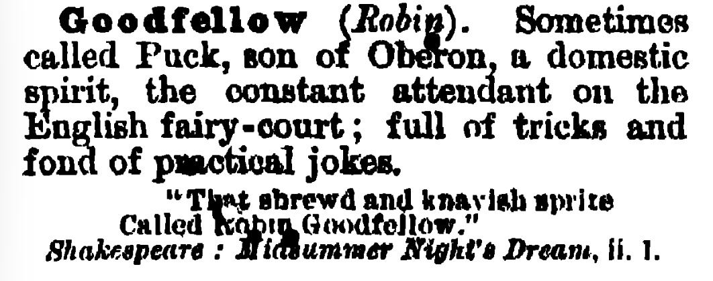

Pucks is a space for exhibition making in both the real sense and an ongoing subscription-like publication. I host exhibitions in my flat, wherever I live, and a number of publications might be wherever you live. Pucks has a domestic core. The exhibition program is grounded in a set of limitations. These stem from my own interests in logistics and systems of distribution but are as much indebted to the spatial limitations of my home and a desire to escape from certain institutional norms and procedures. Pucks runs an exclusively international, non-local program without any transportation of artworks or people travelling. All shows are locally produced in absence of the artists. It is an attempt to evoke the world-part of the artworld through a non-cargo based logistics of ideas, conversations, outsourcing, interpretation and collaboration. Pucks is located at Schmalzhofgasse 18/2/27, 1060 Vienna but might move elsewhere as life goes on. It takes its name from English mythology, in which Puck is a merry household fairy known for mischievous pranks and practical jokes. At night, Puck may also perform small services for the household he inhabits.
The publication consists of an edition of 180 pieces which, when placed side by side, cover exactly the entire floor of the exhibition space. I like to think of these as a kind of distributed second floor. Another etage, that continues the real space of my flat into the homes of other people.
